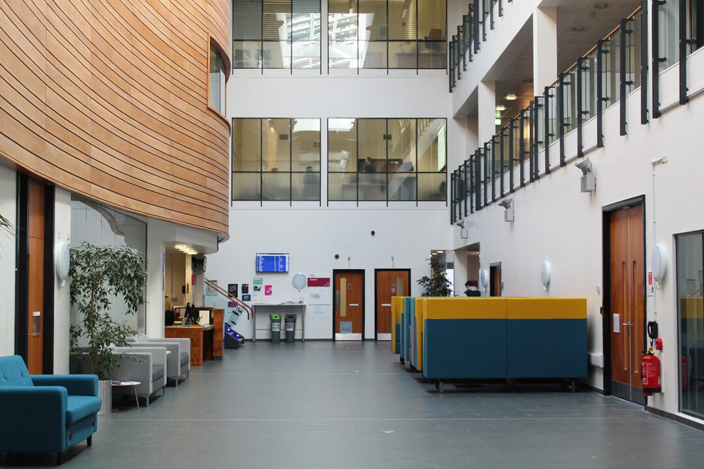
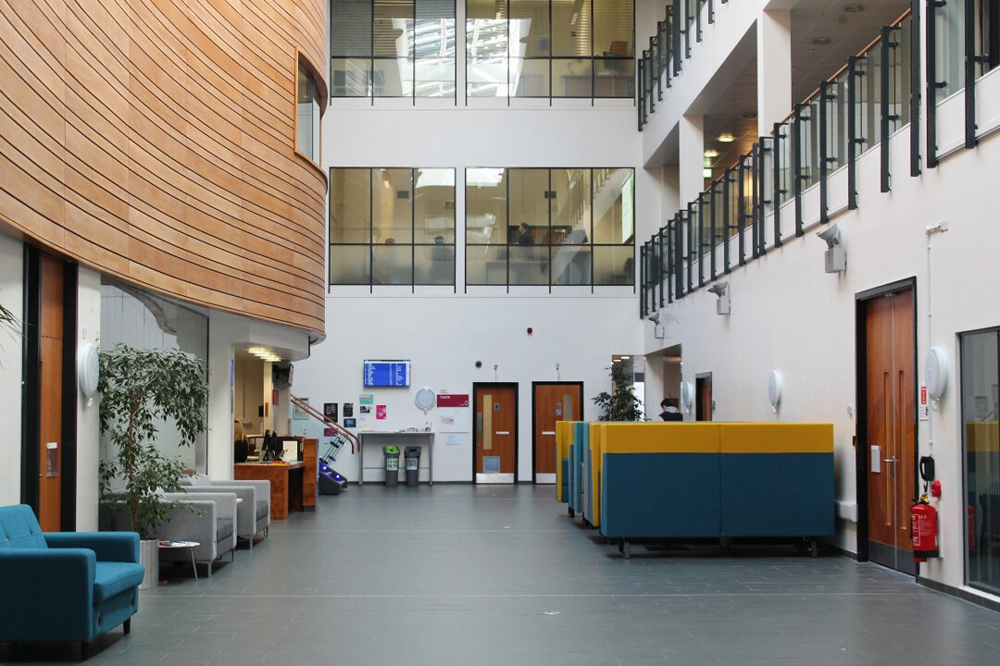

The College is located in the attractive and pleasantly refurbished Building. The building houses computing laboratories, and lecture/tutorial rooms. It has its own catering facilities and student work areas. There is also a car park to the back of the building.
Our building has space of 9500m², houses over 240 staff and provides teaching space for more than 1600 students.
Facilities include:
- wi-fi technology
- pool teaching rooms, including classrooms to teach from 25 - 80 students
- specialist faculty facilities
- a double height lecture theatre at first and second floor level
- dramatic three-storey glass open atrium
- meeting rooms
- office accommodation
- specialist IT facilities
- reception desk area
- catering outlet
- parking for disabled badge holders
- cycle racks